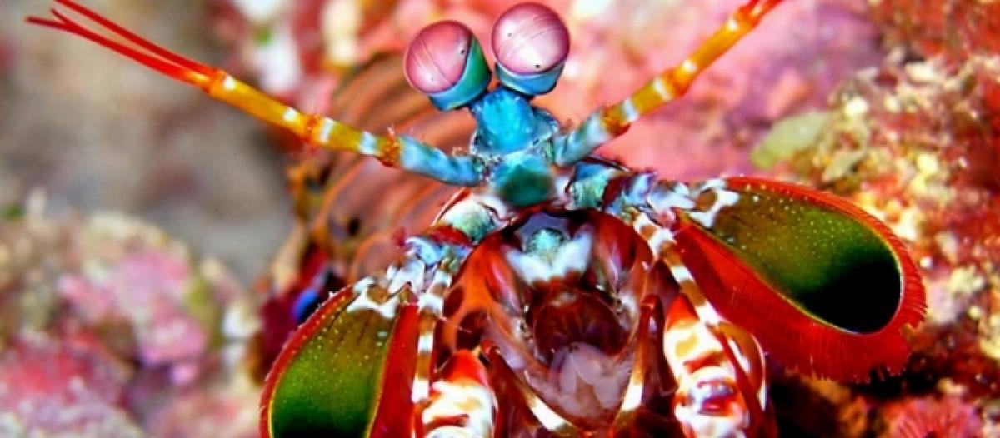

Informações gerais
Stomatopoda (ou estomatópode), chamados popularmente de tamarutacas ou de lacraias-do-mar no Brasil, é uma ordem de crustáceos marinhos da subclasse Hoplocarida, que agrupa cerca de 400 espécies, caracterizadas principalmente pela morfologia da segunda pata torácica, que é modificada em apêndice subquelado, lembrando uma pata de louva-a-deus.
Os estomatópodes são predadores ativos que caçam presas com o auxílio de um sentido de visão muito apurado e capaz de interpretar polarização no espectro ultravioleta e infravermelho). Apresentam uma grande variação de tamanho, que pode ir de poucos milímetros até aproximadamente 40 cm nas espécies maiores. Eles vivem em fundo consolidado, lodoso ou ainda arenoso, onde cavam seus buracos ou aproveitam-se dos orifícios deixados por outros animais para neles se instalar. São animais exclusivamente carnívoros, alimentando-se de camarões, caranguejos, moluscos, peixes e até mesmo outros da mesma ordem.
Classificação científica:
- Nome científico: Odontodactylus scyllarus
- Reino: Animalia
- Filo: Arthropoda
- Subfilo: Crustacea
- Classe: Malacostraca
- Subclasse: Hoplocarida
- Ordem: Stomatopoda; Latreille, 1817
A super visão do Stomatopoda
Uma das espécies de camarão mantis (Gonodactylus smithii) têm os olhos mais complexos do reino animal e é capaz de ver cores invisíveis a vários outros animais, do ultravioleta ao infravermelho. A descoberta foi anunciada por cientistas suíços e australianos.
Muito além de suas peculiaridades motoras, o Camarão Mantis apresenta uma extensa gama de características únicas. A mais emblemática delas, é o fato de que possui o mais complexo sistema de visão de cores do mundo animal, conseguindo processar 16 cores ao todo.
Enquanto nós humanos conseguimos processar somente três tipos de cores primárias (vermelho, verde e azul), esse distinto animal é capaz de enxergar 12 cores primárias porque possui 12 cones de percepção de cor. Os quatro cones restantes, lhe permite enxergar imagens multiespectrais, como a luz ultravioleta.

O soco fatal
Dentre 400 espécies, o Odontodactylus scyllarus é o que desfere um golpe mais violento: seu soco chega a 80 quilômetros por hora, aceleração semelhante a uma arma calibre .22.
Com uma pressão resultante de 60 quilos por centímetro quadrado, o bicho consegue facilmente quebrar a carapaça de um caranguejo – ou até mesmo o vidro de um aquário, em alguns casos.
